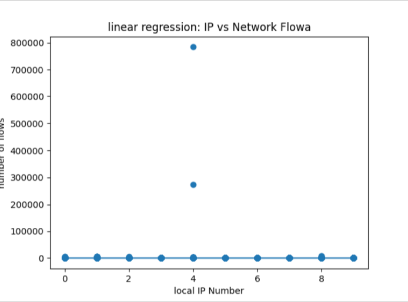

Dataset Overview
The dataset focuses on summarizing network traffic data across 10 workstations whose IP’s have been coded as 0-9, across a three-month period, from 2006-07-01 to 2006-09-30. It contains 21K rows, with 4 columns: Date, L-ipn (the local IP address), r_asn (The remote asn), f:flows (count of connections for that day) The purpose was to track odd activity on each IP to determine whether the IP was compromised.
Dataset Cleaning Summary
Temporary
Descriptive Statistics Explanation
Temporary
Visual Analysis with Graphs
The graph below shows the total connections to each IP across the entire period. This graph shows that each IP had a near equal number of connections, with the exception of IP ‘4’ which had way more connections than the rest, potentially showing that it has been turned into part of a botnet.
The graph below shows the daily connections to IP ‘0’ across the whole period. The highest spike was around 2006-08-19, however the number of connections stabilized afterwards.
The graph below shows the daily connections to IP ‘1’ across the whole period. The amount of connections stays mostly stable, however at around 2006-08-26, the IP suddenly started getting 0 connections per day, possibly meaning that it was shut down.
The graph below shows the daily connections to IP ‘2’ across the whole period. The highest spike was around 2006-09-23, however the number of connections stabilized afterwards.
The graph below shows the daily connections to IP ‘3’ across the whole period. The graph had multiple high spikes, being at around 2006-07-15, 2006-08-19 and 2006-09-30. After the last spike, the IP started getting 0 connections daily, showing that it may have been shut down.
The graph below shows the daily connections to IP ‘4’ across the whole period. This graph shows that the connections were stable until around 2006-09-16, when a huge spike of hundreds of thousands of connections happen in one day, showing that the IP had become part of a botnet.
The graph below shows the daily connections to IP ‘5’ across the whole period. The highest spike was around 2006-07-22, after which it stabilized until 2006-09-09, when the connections to the IP daily became 0, showing it was possibly shut down.
The graph below shows the daily connections to IP ‘6’ across the whole period. This graph shows multiple high spikes at 2006-07-15, 2006-08-19 and 2006-09-23.
The graph below shows the daily connections to IP ‘7’ across the whole period. The graph had big fluctuations in the amount of daily connections.
The graph below shows the daily connections to IP ‘8’ across the whole period. The graph had multiple high spikes at 2006-07-08, 2006-09-23 and 2006-09-30
The graph below shows the daily connections to IP ‘8’ across the whole period. The graph had big fluctuations in the number of daily connections. There was also a period from 2006-09-02 to 2006-09-16 where the machine seemed shut down.
Basic Machine Learning
For the machine learning component of this project, a Linear Regression model was implemented to analyse the relationship between local IP numbers and network traffic flows.
Linear regression is a supervised learning algorithm used to predict a numerical value by fitting a straight line to observed data. In this case:
- The independent variable (X) is the local IP number (l_ipn)
- The dependent variable (Y) is the number of network flows (f)
The dataset was loaded using the Pandas library in Python. The model was implemented using the LinearRegression class from the Scikit-learn library. The model was trained using the .fit() method, which determines the best-fitting line using the least squares approach.
Implementation
The core part of the implementation is shown below:
X = df[["l_ipn"]]
y = df["f"]
model = LinearRegression()
model.fit(X, y)
After training the model, predictions were generated and visualised using Matplotlib.
Results:
The regression model produced the following equation:
Flows = -3.13 × l_ipn + 107.16
Figure shows the regression line plotted against the actual dataset values.
Figure : Linear Regression showing the relationship between Local IP Number and Network Flows
Interpretation of Results
From Figure 1, it is clear that most IP addresses generate very low numbers of flows, as seen by the cluster of points near zero on the graph.
However, two IP addresses generate extremely high traffic values (reaching several hundred thousand connections in a single day). These values act as strong outliers in the dataset.
Due to the presence of these extreme values, the regression line appears nearly flat. This indicates that there is no strong linear relationship between the IP number and the number of flows across the dataset as a whole. Instead, the data is heavily influenced by a small number of unusually large traffic values.
The slope of the regression equation (-3.13) is relatively small compared to the scale of the outliers, further supporting the conclusion that IP number alone does not strongly predict network flow volume.
Relevance to Cybersecurity
In a cybersecurity context, extreme deviations from normal traffic patterns may indicate unusual or suspicious activity. The very large flow values observed for certain IP addresses could represent abnormal network behaviour, potential system misconfiguration, or possible malicious activity.
Although linear regression helps visualise overall trends, it does not fully capture irregular spikes in network traffic. More advanced models or anomaly detection techniques may be required for deeper analysis
Code for Regression Algorithm
# Very Basic Linear Regression + Logistic Regression
# Dataset: cs448b_ipasn.csv
import pandas as pd
import numpy as np
import matplotlib.pyplot as plt
from sklearn.linear_model import LinearRegression
# 1) Load the data
df= pd.read_csv("cs448b_ipasn.csv")
df.columns = df.columns.str.strip()
# define input x and output y
X = df[["l_ipn"]]
y = df["f"]
#create and train model
model=LinearRegression()
model.fit(X,y)
# Smooth line
x_line = np.linspace(X["l_ipn"].min(), X["l_ipn"].max(), 100).reshape(-1, 1)
y_line = model.predict(x_line)
#results
plt.figure()
plt.scatter(X["l_ipn"] , y)
plt.plot(x_line, y_line)
plt.Xlabel("local IP Number")
plt.ylabel("number of flows")
plt.title("linear regression: IP vs Network Flowa")
plt.show()
#print regression equation
print("LINEAR REGRESSION EQUATION:")
print(f"Flows = {model.coef_[0]:.2f} * l_ipn + {model.intercept_:.2f}")
Limitations and Ethics
Temporary
Conclusion
This project analayzes network traffic data collected from 10 workstations (coded 0-9) over a three month period - July 1st -September 30th 2006.
Objective
The primary goal of this project was to detect unusual or suspicious activity patterns across machines and determine whether any workstation may have been compromised.
Dataset Cleaning and Preparation
Before analysis, the dataset was prepared by:
- Removing formatting inconsistencies in column names
- Verifying date formatting and chronological ordering
- Checking for missing or zero value anomalies
- Ensuring numeric consistency in flow counts
This ensured reliable statistical analysis and machine learning modeling
Visual Analysis
Across the full 3 month period:
- Most IP addresses recieved relatively equal traffic volumes
- IP '4' showed significantly higher total connections
- This deviation strongly suggests abnormal behaviour
Machine Learning Analysis
A linear Regression model was implemented to evaluate whether IP number predicts traffic volume:
Flows = -3.13 × l_ipn + 107.16
- Most IPs generate low traffic volumes, except a few extreme outliers
- The slope is small, showing that IP number alone does not predict traffic volume
- Outliers like IP ‘4’ dominate the dataset, highlighting anomalous behavior
Cybersecurity Implications
High traffic spikes may indicate botnets or automated attacks, while periods of zero traffic may signal shutdown
Behavioral deviations are often more critical than overall traffic averages
Visual analytics combined with machine learning enhances detection of unusual network activity
Limitations and Future Work
Linear regression is sensitive to extreme values and IP number is not a strong predictor of flow volumes
Future improvements could include:
- Time series anomaly detection
- Clustering or Isolation Forest models
- Classification models to flag potentially compromised machines
Conclusion
This analysis successfully identified network anomalies and highlighted the importance of monitoring traffic deviations
The most notable finding was the extreme spike on IP 4, suggesting botnet participation, while other IPs showed shutdown periods a practical approach to detecting unusual or suspicious network activity in cybersecurity contexts